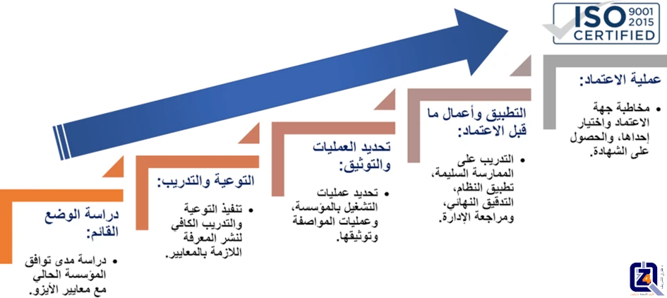

ما هي مراحل اعتماد الأيزو؟


مرحبًا بكم في موسوعة فور زد لاستشارات الجودة. الكثير منا قد سمع من قبل عن شهادات الأيزو واعتماد بعض المؤسسات والشركات به. ورأى العديد منا اللوجو المميز لشهادة الأيزو الدولية على مواقع ومنصات تلك الجهات. لكن ربما يعرف القليل فقط، طريقة الحصول على هذه الشهادة الشهيرة. وماذا يجب على المؤسسة أو الشركة اتباعه كي تنال هذا الاعتماد المرموق. والذي يشير إلى جودة المنتج أو الخدمة التي تقدم من قبل كل من يحوز عليه. فلنتعلم معًا المزيد حول مراحل تطبيق معايير الأيزو والحصول على الاعتماد، هنا كمثال لنظام إدارة الجودة.
يجب على أي مؤسسة راغبة في تطبيق نظام لإدارة الجودة، إتباع الخطوات التالية:
مراحل تطبيق وتقييم نظام إدارة الجودة:
يجب على أي مؤسسة راغبة في تطبيق نظام لإدارة الجودة، إتباع الخطوات التالية:
- عمل دراسة تعقد فيها مقارنة موضوعية بين الوضع القائم للمؤسسة، وبين متطلبات معايير نظام إدارة الجودة. وتُجرى عادة هذه الدراسة بمعرفة مختصين بالإدارة، كخبرائنا في شركة فور زد للجودة، بمشاركة العاملين بالمؤسسة. ويستخدم فيها أدوات مختلفة منها "التدقيق"، و"المقابلات الشخصية"، و"الاستبيانات". بنهاية الأمر تتكون صورة محددة، عن مدى بعد أو قرب المؤسسة عن نظام إدارة الجودة المستهدف. أهم المخرجات الأساسية لهذه الدراسة هو تحديد دقيق للفجوة المحتملة أو الموجودة، بين النظام القائم بالمؤسسة، ونظام إدارة الجودة المستهدف.
- تقوم الإدارة العليا للمؤسسة بمشاركة المختصين، بوضع خطة تنفيذية للخطوات والإجراءات، اللازم اتخاذها لتغطية تلك الفجوة التي تم تحديدها بالخطوة الأولى.
- بالتوازي، يجب أن تتبنى وتنفذ المؤسسة برنامجًا تدريبيًا لجميع العاملين بالمنشأة. يهدف هذا التدريب إلى التوعية بمتطلبات نظام إدارة الجودة المستهدف تحقيقه. وذلك لإعداد المنشأة نفسيًا وفنيًا للتغيير المطلوب. نحن في شركة فور زد للجودة، نقدم ورش عمل وبرامج تدريبية ممتازة وبأسعار لا تنافس، تغير تمامًا من سلوكيات العمل، وتعزز الالتزام بالتحسين، وتبسط مصطلحات معايير الأيزو، ترسي مبادئ الجودة كثقافة داخل مؤسستك.
- يتم تنفيذ الخطة التنفيذية الموضوعة بالخطوة الثانية من خلال المسئولين والخبراء. وعلى الإدارة العليا للمؤسسة أن تقوم بتوفير الموارد اللازمة لتنفيذ تلك الخطة.
- بعد تنفيذ الخطة، المفترض مطابقتها لمعايير نظام إدارة الجودة، ومرور فترة زمنية معقولة، تؤكد استقرار النظام الجديد، تقوم الإدارة العليا بتكليف مختصين ذوي خبرة مناسبة سواء من داخل المؤسسة، أو من خارجها، بإجراء تدقيق شامل على تنفيذ النظام الجديد بالمؤسسة. ويتم عادة التدقيق بصورة منهجية، وطبقا لخطة موضوعة سلفا، وبالاستعانة بقائمة تعرف بقائمة المطابقة. والتي تشمل العناصر الرئيسية لمعايير نظام إدارة الجودة، ويكون تقرير هذا التدقيق إما بالتأكيد على تطابق الوضع القائم مع المعايير، أو عدم التطابق.
- بالتالي تكون نتائج التدقيق عادة، إما "المطابقة" لمتطلبات معايير نظام إدارة الجودة المستهدف، أو "عدم المطابقة". وهنا يجب اتخاذ الإجراءات التصحيحية المناسبة لإغلاق "عدم المطابقات"، بمعاونة الإدارة العليا.
- تقوم المؤسسة بتنفيذ العمليات الواردة في الخطوة الخامسة والسادسة بشكل منتظم. وذلك للحفاظ على مستوى أداء مرضي للمؤسسة، وطبقا لمتطلبات نظام إدارة الجودة.
“يتضمن تطبيق نظام إدارة الجودة؛ إجراء تحليل الفجوة، وضع خطة عمل لسد تلك الفجوات، تصميم برنامج تدريبي للتحضير للتغيير، تنفيذ خطة العمل، إجراء تدقيق للنظام الجديد، وأخبرًا اقتراح إجراء تصحيحي لإزالة عدم المطابقات.”
مراحل الحصول على شهادة الأيزو 9001 الخاص بنظام إدارة الجودة:
تمثل المواصفات الدولية الأيزو 9001 بنسختها الأخيرة لعام 2015، متطلبات عامة لنظام إدارة الجودة. التي تصلح للتطبيق على أي مؤسسة، أيا كان نوعها، أو حجمها، أو تبعيتها. وتمثل هذه المواصفات نظامًا لإدارة الجودة الأكثر تطبيقًا على مستوى العالم. وهي مواصفات دولية صادرة عن منظمة الأيزو الدولية. ويجرى عليها تعديلات دورية، وعند تطبيقها بنجاح، تستطيع المؤسسة الحصول على شهادة تؤكد على التزامها بمعايير تلك المواصفات.
خطوات الاعتماد للأيزو 9001:
تمثل الخطوات السابق ذكرها، الخطوات الأساسية لتأهيل المؤسسة لنيل شهادة الأيزو، يبقى أن نذكر بعض التفاصيل الهامة لمسار الاعتماد:
- تعيين ممثل للإدارة العليا، يكون له السلطة والتفويض، في إنشاء نظام إدارة الجودة، ومتابعته، والاتصال بالجهات الخارجية فيما يخص النظام. ثم يتم الشروع فورًا في عمل دراسة المقارنة التي سبق تفصيلها، طبقًا لمعايير الأيزو 9001. بالانتهاء من الدراسة، يتم إصدار تقرير يرصد الوضع القائم وتوضيح الفجوة بينه وبين الوضع المستهدف. يرافق التقرير خطة تنفيذية لعلاج الفجوة المرصودة في الدراسة.
- بدء وتنفيذ برنامج تدريبي توعوي لجميع العاملين يدور حول نظام إدارة الجودة المطابق لمعايير الأيزو 9001.
- تنفيذ الخطة التنفيذية، وتجميع الوثائق، وتعديل كافة عمليات المؤسسة لتتطابق مع معايير الأيزو 9001.
- إجراء تدقيق داخلي، والكشف عن عدم المطابقات، وعلاجها عن طريق الإجراءات التصحيحية المدروسة.
- قيام الإدارة العليا بعمل مراجعات ومتابعات دورية مخطط لها، تراقب فيها تنفيذ المؤسسة للنظام الموضوع، وحل أي مشاكل عالقة تحول دون التنفيذ والممارسة السليمة له. كي تطمئن الإدارة العليا على مطابقة المؤسسة لنظام إدارة الجودة ومتطلباته الواردة في مواصفة الأيزو 9001.
- تقوم المؤسسة باختيار، والتعاقد مع جهة معترف بها لإصدار شهادات الأيزو، والتي تقوم بالتنسيق مع ممثل الإدارة للمؤسسة، لترتيب توقيتات التدقيق والتفتيش عليها.
- أخيرًا، تقوم جهة إصدار شهادة الأيزو، بالتدقيق على المؤسسة. في حال كان التدقيق إيجابي، يتم منح المؤسسة شهادة الأيزو 9001، على أن تكون المؤسسة، خاضعة لتدقيق الجهة المانحة الدوري للتأكد من استمرارية مطابقة المؤسسة مع متطلبات المعايير الدولية.
فوائد الحصول على شهادات الأيزو 9001:
- توثيق كافة الإجراءات ونظم العمل وتسجيل جميع عمليات التشغيل بصورة روتينية.
- دفع وتعزيز عمليات التدريب وصقل مهارات العاملين بالمؤسسة.
- إدخال آليات عمل جديدة حسب الحاجة.
- التركيز على رضاء العميل الداخلي والخارجي.
- المطالبة دائما بالتطابق والثبات في كل من معايير المنتج أو الخدمة المقدمة، والأداء العام للعاملين.
- الاعتراف الدولي وتحسين صورة المؤسسة لدى عملائها.
- الوفاء بمعيار معترف به في السوق المحلي والأسواق الدولية.
آلية تأهيل المنشآت للحصول على شهادات الأيزو 9001 في لمحة سريعة:

خطوات التأهيل لنيل شهادة الأيزو
إذا تمكن هذا الشرح السريع لمراحل اعتماد الأيزو من زيادة فضولكم لمعرفة المزيد عن شهادات الأيزو، ومعاييرها، أو أثار هذا العرض المختصر اهتمامكم لتأهيل شركتكم لنيل اعتماد الأيزو، فتفضلوا بالتواصل معنا اليوم،
يمكنكم التواصل معنا، بإرسال بريدًا إلكترونيًا على العنوان التالي: support@the4z.com. نحن هنا لنجعل الأيزو أبسط وأسهل لكم.
أو الاتصال اليوم بشركة فور زد للجودة، على رقم (أيضًا واتساب):
0097333995807 أو 00905050304016.